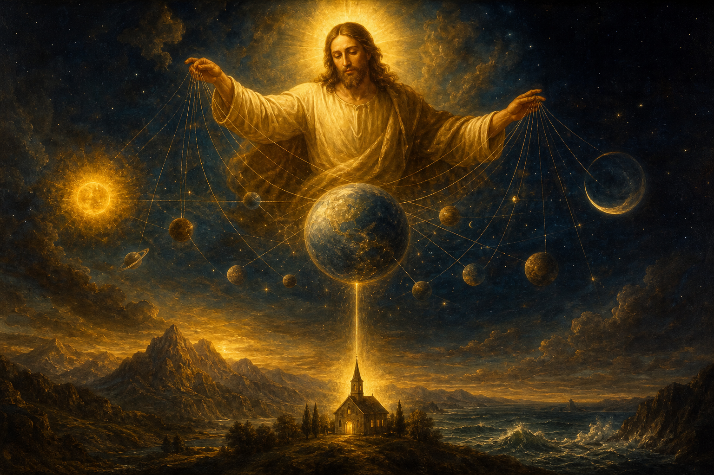

New Testament · Book 12 of 27
Colossians
Against teachers offering secret wisdom and extra rules, Paul declares that in Christ alone the whole fulness of God dwells, and in him believers already have everything.
Writing to a church he has never visited, Paul counters a mix of philosophy, legalism, and mysticism infiltrating the Colossian church with the towering truth that Christ is supreme over all creation and sufficient for everything they need.
For in him dwelleth all the fulness of the Godhead bodily. And ye are complete in him.
What happens in Colossians
Paul opens with one of the New Testament's highest statements of who Christ is: the image of the invisible God, the firstborn over all creation, the one by whom and for whom all things were made, in whom all things hold together, and the head of the church. He warns the Colossians not to be taken captive by hollow philosophy, human tradition, or rules about food, festivals, and the worship of angels, since all of these are only a shadow while the substance belongs to Christ, in whom believers have been made complete. Having died and been raised with Christ, Paul tells them to set their minds on things above, putting to death earthly practices like impurity and greed and putting on compassion, kindness, humility, and above all love, which binds everything together in perfect unity. He gives instructions for households, addressing wives and husbands, children and fathers, and servants and masters, urging all work to be done as for the Lord. The letter closes with a call to prayer and wise conduct toward outsiders, along with personal greetings naming several coworkers, including instructions to exchange this letter with the one sent to Laodicea.
Why it matters
Colossians contains some of Scripture's most exalted language about Christ's deity and cosmic authority, making it a cornerstone for Christian teaching on who Jesus is. Its warning against adding anything to Christ for completeness continues to guard the church against movements that promise spiritual fulfillment apart from him.